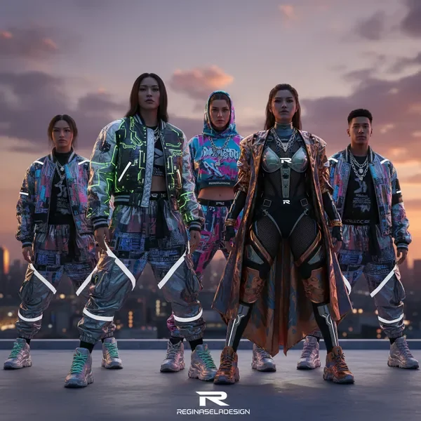
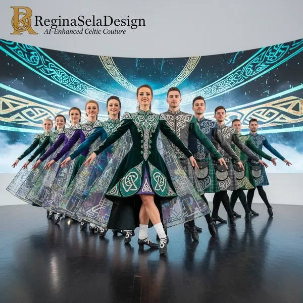

כל תלבושת בגלריה שלנו מייצגת שילוב ייחודי של חזון אמנותי, טכנולוגיה חדשנית ומקצועיות גבוהה. אנחנו גאים להציג את העבודות שיצרנו עבור רקדנים, להקות ומשתתפים בתחרויות ריקוד מכל הסוגים.

בלט קלאסי
תלבושת אלגנטית עם פרטי תחרה מורכבים

ריקוד עכשווי
קולקציה גיאומטרית ללהקה מקצועית

ריקוד לטיני
תלבושות תחרות עם פייטים נוצצים

היפ הופ
עיצוב אורבני עם אלמנטים מטאליים

ריקוד אירי
שילוב מסורת עם עיצוב מודרני